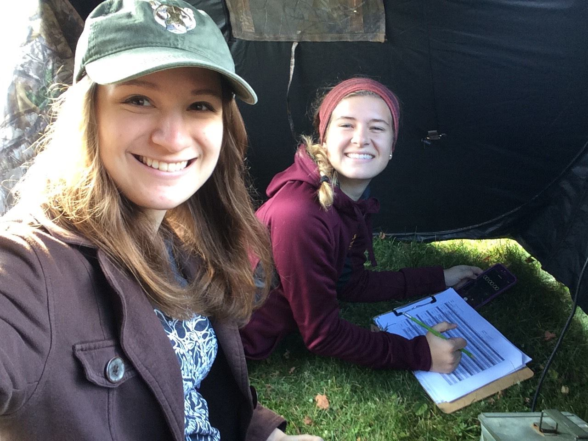

2020-2022
Master's Thesis Research
Austin Peay State University, Clarksville, TN
My current research includes studying the breeding biology of a temperate Neotropical migrant, the Louisiana Waterthrush, which is a species with potentially limited opportunities for extra-pair mating.

In addition to my thesis project, I am also currently assisting with lab research looking at apparent survival in White-throated Sparrows.
Woltmann Lab

2018
Locating Grassland Bird Nests with a Drone-mounted Thermal Camera
Pierce Cedar Creek Institute, Hastings, MI
Monitoring songbird reproductive output is a well-established method for assessing population persistence, but reproductive studies on grassland songbirds often suffer from low sample sizes, high labor costs, and high levels of disturbance due to the difficulty of finding nests. However, technological advances in unmanned aerial vehicles (UAVs or drones) might improve our ability to locate these hidden nests with minimal intrusion. We compared the effectiveness and efficiency of locating grassland songbird nests with a thermal camera mounted on a UAV versus traditional nest searching techniques. We used a paired experimental design to determine whether UAV-assisted searches could replicate the results from traditional search methods. Two independent teams surveyed field sparrow (Spizella pusilla) territories with active ground nests for up to 2h on consecutive days. Each team recorded the outcome and time it took to locate the nest. Both methods were highly successful at locating ground nests. UAV-assisted searches located nests 28% faster than traditional methods, but the results from a survival-style analysis indicated that the methods were not significantly different.  Although UAVs may temporarily increase stress and alter the behavior of animals, UAV-assisted searches are generally less invasive than traditional methods because piloting the aircraft from the territory edge drastically reduces the need to traverse and trample vegetation within the territory. Thus, UAV-assisted nest searches represent a promising technique for locating grassland bird nests. Continued advances in UAV and thermal technology are likely to increase the efficiency of UAV-assisted nest searches and may eventually remove the need for humans to enter target territories when monitoring nest success.
Although UAVs may temporarily increase stress and alter the behavior of animals, UAV-assisted searches are generally less invasive than traditional methods because piloting the aircraft from the territory edge drastically reduces the need to traverse and trample vegetation within the territory. Thus, UAV-assisted nest searches represent a promising technique for locating grassland bird nests. Continued advances in UAV and thermal technology are likely to increase the efficiency of UAV-assisted nest searches and may eventually remove the need for humans to enter target territories when monitoring nest success.
C.N.Scholten, A.J.Kamphuis, K.J.Vredevoogd, K.G.Lee-Strydhorst, J.L.Atma, C.B.Shea, O.N.Lamberg, D.S.Proppe. 2019. Real-time thermal imagery from an unmanned aerial vehicle can locate ground nests of a grassland songbird at rates similar to traditional methods. Biological Conservation 233, 241-246.
2017-2018
Effects of Prescribed Burns on Epigeal Arthropod Communities
Calvin University, Grand Rapids, MI
Monitoring songbird reproductive output is a well-established method for assessing population persistence, but reproductive studies on grassland songbirds often suffer from low sample sizes, high labor costs, and high levels of disturbance due to the difficulty of finding nests. However, technological advances in unmanned aerial vehicles (UAVs or drones) might improve our ability to locate these hidden nests with minimal intrusion. We compared the effectiveness and efficiency of locating grassland songbird nests with a thermal camera mounted on a UAV versus traditional nest searching techniques. We used a paired experimental design to determine whether UAV-assisted searches could replicate the results from traditional search methods.  Two independent teams surveyed field sparrow (Spizella pusilla) territories with active ground nests for up to 2h on consecutive days. Each team recorded the outcome and time it took to locate the nest. Both methods were highly successful at locating ground nests. UAV-assisted searches located nests 28% faster than traditional methods, but the results from a survival-style analysis indicated that the methods were not significantly different. Although UAVs may temporarily increase stress and alter the behavior of animals, UAV-assisted searches are generally less invasive than traditional methods because piloting the aircraft from the territory edge drastically reduces the need to traverse and trample vegetation within the territory. Thus, UAV-assisted nest searches represent a promising technique for locating grassland bird nests. Continued advances in UAV and thermal technology are likely to increase the efficiency of UAV-assisted nest searches and may eventually remove the need for humans to enter target territories when monitoring nest success.
Two independent teams surveyed field sparrow (Spizella pusilla) territories with active ground nests for up to 2h on consecutive days. Each team recorded the outcome and time it took to locate the nest. Both methods were highly successful at locating ground nests. UAV-assisted searches located nests 28% faster than traditional methods, but the results from a survival-style analysis indicated that the methods were not significantly different. Although UAVs may temporarily increase stress and alter the behavior of animals, UAV-assisted searches are generally less invasive than traditional methods because piloting the aircraft from the territory edge drastically reduces the need to traverse and trample vegetation within the territory. Thus, UAV-assisted nest searches represent a promising technique for locating grassland bird nests. Continued advances in UAV and thermal technology are likely to increase the efficiency of UAV-assisted nest searches and may eventually remove the need for humans to enter target territories when monitoring nest success.

2016-2017
Effects of Urbanization on Black-capped Chickadees
Pierce Cedar Creek Institute, Hastings, MI
Urban landscapes contain a multitude of novel sensory stimuli, and urban dwelling animals, such as songbirds living near human dwellings, must quickly learn how to respond to these unfamiliar cues. When exposure reveals that a stimulus is associated with a cost, fearful behavior should increase. Conversely, neophobic fear should decrease when negative outcomes do not regularly follow the stimulus. Because exposure to anthropogenic stimuli is more common in birds that inhabit urbanized landscapes, their fear response patterns should more accurately reflect the risks associated with these stimuli. We conducted a series of feeder and playback experiments to explore whether urbanization altered black-capped chickadees’ (Poecile atricapillus) fear responses to model cats, humans, a novel object, and anthropogenic noise. We predicted that fearful responses to cat models would increase in birds as urbanization increased because negative interactions with cats are more common in the city. However, we expected urban birds to be less fearful of our other stimuli because fitness costs are absent or less severe. As predicted, the fear of cats increased with urbanization, but the fear of noise decreased - as indicated by willingness to visit a feeding station. Other stimuli were not associated with urbanization, which may be related to the use of county and city parks where human presence is relatively common. Nonetheless, our results suggest that plastic fear responses to novel stimuli may facilitate urban success in the black-capped chickadee. More generally, behavioral plasticity may indicate the ability of a species to thrive in the urban environment.
Van Donselaar, J.L., Atma, J.L., Kruyf, Z.A. LaCroix, H.N. Proppe, D.S. 2018. Urbanization alters fear behavior in black-capped chickadees. Urban Ecosystms 21, 1043–1051.